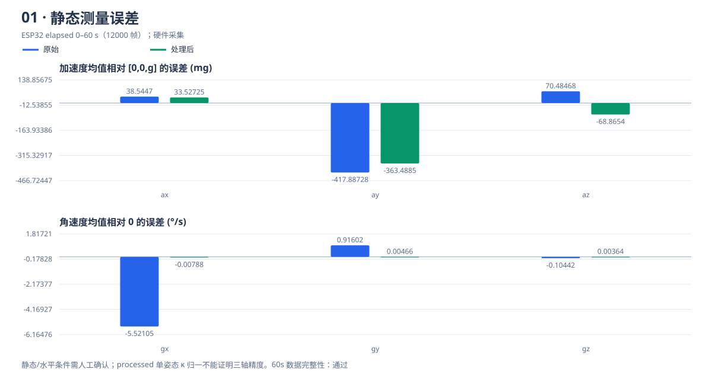
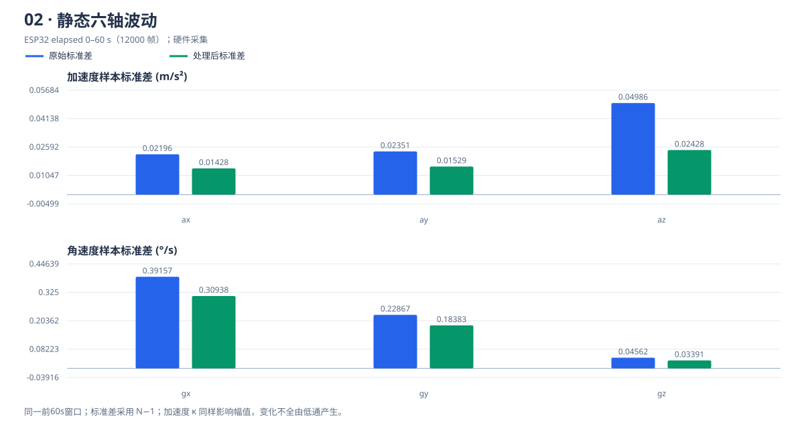
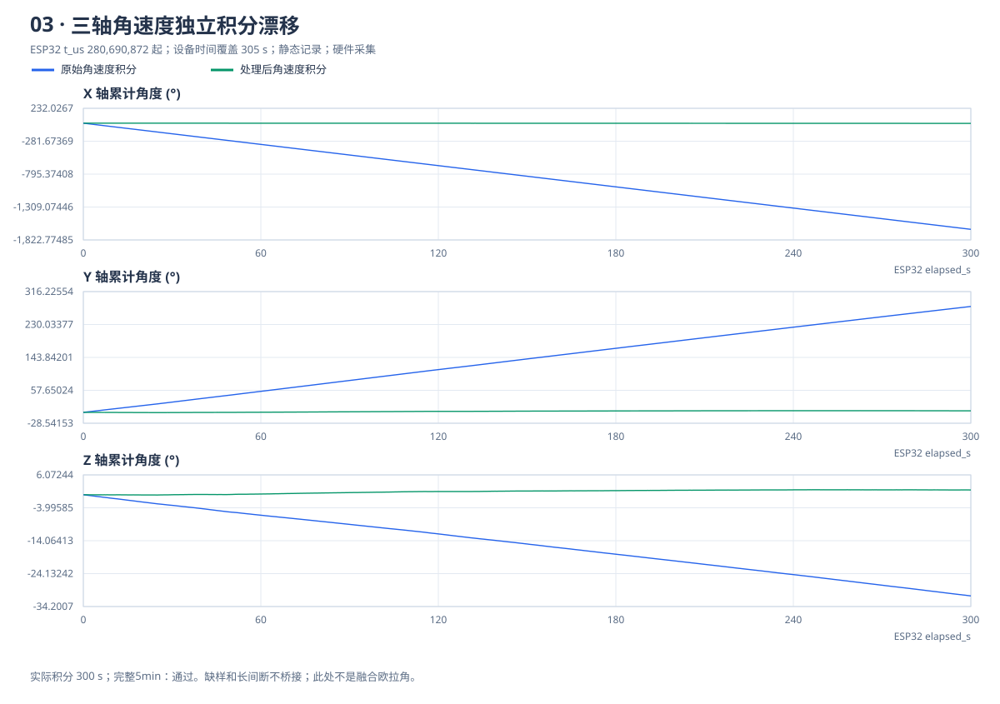
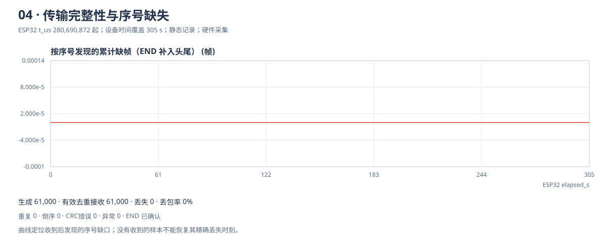
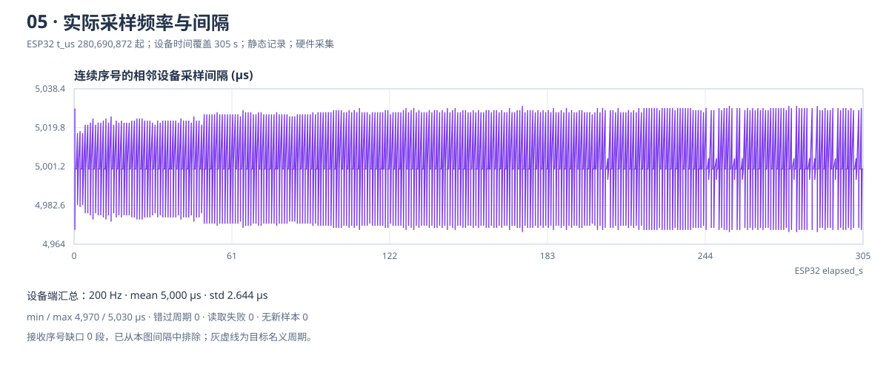
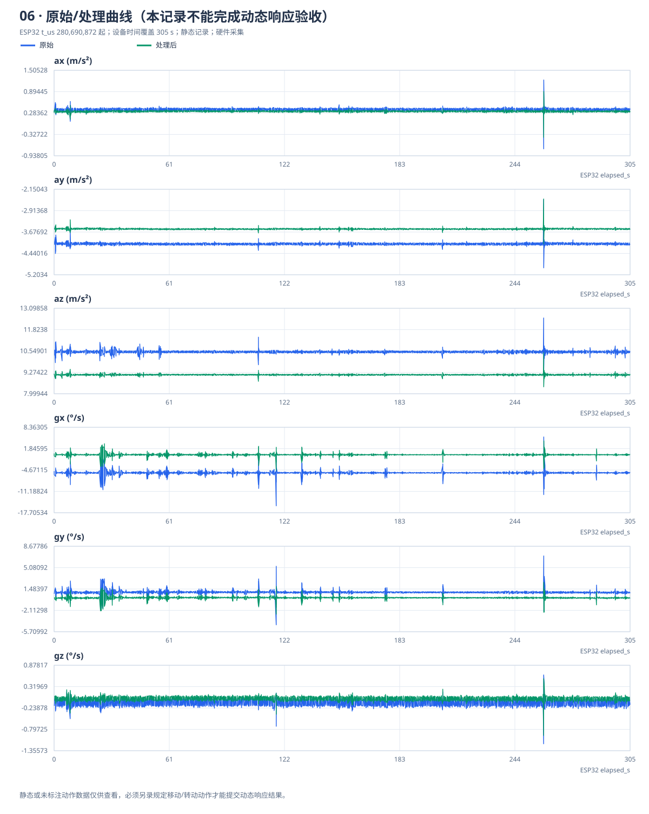

六轴 IMU 采集与性能评测
Session 2920458151 · 静态记录 · 硬件采集
所有曲线横轴均为 ESP32 采样时间；报告生成时间 2026-11-04T12:14:31.094Z 仅用于文件管理。
记录条件与完整性
END 已确认60s 时间与数据完整5min 时间与数据完整完整标记只证明时长和数据链路检查通过，不能自动证明水平、静止或规定动作已完成。近似水平时，X/Y 加速度均值包含重力投影，不可把全部误差归因于传感器零偏。
单姿态重力模长比例 κ = g / ‖mean(raw a)‖ 仅用于 processed 加速度；raw 完整保留。它不能分离 offset、各轴 gain 或倾斜，不能代替六面标定。同姿态归一后重力模长接近 g 不是独立精度证明；校准数据与评测记录分开，测试内固定 κ。
设备结束摘要与数据完整性检查未发现采集错误。
输入：recording.json；记录时间：2026-11-04T20:07:38.5989456+08:00；设备首时间戳：280,690,872 µs；原始时间跨度 304.995 s。时间覆盖包含最后一个名义周期，积分只使用实际相邻时间戳。
1. 测量误差
角速度误差 = mean(ω)；加速度误差 mg = 1000 × (mean(a) − a_ref) / g；a_ref = [0,0,g]。
取设备会话前 60 秒；校准与滤波前后使用同一窗口。水平固定且 +Z 向上时参考成立。processed 加速度包含 κ 修正，同姿态均值误差下降不能直接证明精确三轴标定。
| 轴 | 原始均值 | 处理均值 | 原始误差 | 处理误差 | 误差单位 |
|---|---|---|---|---|---|
| ax | 0.377994 | 0.32879 | 38.5447 | 33.52725 | mg |
| ay | -4.098074 | -3.564604 | -417.88728 | -363.4885 | mg |
| az | 10.497869 | 9.131311 | 70.48468 | -68.8654 | mg |
| gx | -5.521051 | -0.007877 | -5.52105 | -0.00788 | °/s |
| gy | 0.916019 | 0.004665 | 0.91602 | 0.00466 | °/s |
| gz | -0.104419 | 0.00364 | -0.10442 | 0.00364 | °/s |

2. 数据波动
样本标准差 s = sqrt(Σ(x−mean)²/(N−1))；变化比例 = (1 − s_filtered/s_raw) × 100%。
原始值仍包含共同的硬件 DLPF；这里对比额外软件处理的效果。加速度标准差也受 κ 比例影响，不能把全部变化归因于低通。原始标准差为零时变化比例不定义。
| 轴 | 原始标准差 | 处理标准差 | 变化比例 | 单位 |
|---|---|---|---|---|
| ax | 0.0219564 | 0.0142808 | 34.958% | m/s² |
| ay | 0.0235138 | 0.0152941 | 34.957% | m/s² |
| az | 0.0498556 | 0.0242804 | 51.298% | m/s² |
| gx | 0.3915674 | 0.3093848 | 20.988% | °/s |
| gy | 0.2286662 | 0.1838343 | 19.606% | °/s |
| gz | 0.0456249 | 0.0339123 | 25.671% | °/s |

3. 五分钟静止角度漂移
θ = Σ((ω[k−1]+ω[k])/2) × (t[k]−t[k−1])；ω 为 °/s，dt 为秒。
三轴独立积分原始/处理角速度，不使用融合后的 Euler。实际积分 300 s；跳过异常区间 0 个。时长与数据完整性通过；仍需确认整个记录期间静止。
| 轴 | 原始累计角度 ° | 处理累计角度 ° |
|---|---|---|
| X | -1,657.065049 | -3.110696 |
| Y | 277.300227 | 3.898886 |
| Z | -30.952867 | 1.465728 |

4. 数据丢包与异常
丢包率 = (ESP32 END.generated − 有效且不重复接收数) / END.generated × 100%。
| 生成 | 有效去重接收 | 丢失 | 丢包率 | 重复 | 倒序 | CRC错误 | 异常帧 |
|---|---|---|---|---|---|---|---|
| 61,000 | 61,000 | 0 | 0% | 0 | 0 | 0 | 0 |
头部缺失 0 帧，尾部缺失 0 帧。读取失败和无新样本独立统计，不用旧数据补齐。

5. 实际采样稳定性
实际频率 = 1,000,000 / mean(Δt_us)。采样间隔优先采用设备摘要；接收端仅对连续序号计算。
| 统计来源 | 实际频率 Hz | 间隔均值 µs | 间隔标准差 µs | 最小间隔 µs | 最大间隔 µs |
|---|---|---|---|---|---|
| device | 200 | 5,000 | 2.644 | 4,970 | 5,030 |
| 采样失败 | 无新样本 | 错过周期 | 发送队列丢弃 | 积分长间断 | 接收序号缺口 |
|---|---|---|---|---|---|
| 0 | 0 | 0 | 0 | 0 | 0 |

6. 滤波响应与原始/处理曲线
本记录是静态或未标注动作的数据；下图仅提供曲线参考，动态滤波响应验收尚未完成。请另录统一移动/转动动作。
一阶低通 y += α(x−y)，α = 1−exp(−2π·fc·dt)。陀螺处理包含启动零偏扣除，加速度处理包含 κ 比例；均值、峰值和波动变化不能全部归因于低通本身。
| 轴 | 原始峰峰值 | 处理峰峰值 | 单位 |
|---|---|---|---|
| ax | 1.970428 | 1.313497 | m/s² |
| ay | 2.439691 | 1.607238 | m/s² |
| az | 3.22499 | 2.038254 | m/s² |
| gx | 21.022901 | 9.031392 | °/s |
| gy | 11.603053 | 5.375451 | °/s |
| gz | 1.801527 | 1.483861 | °/s |

三维轴向视频与位移边界
本静态报告不能替代实体视频。另录初始水平姿态、绕物理 +X/+Y/+Z 按右手方向各转约90°（每次先回初始），再连续组合转动至少30秒，同时拍到模块与模型。
位移为重力剔除后的短时积分估计；零速约束依赖起止静止的动作假设。六轴无绝对偏航参考，不能将短时演示作为长期定位精度证明。
配置与可追溯数据
原始/处理完整记录 JSON · CSV（若已解码生成） · 指标 JSON（若已解码生成）
采样配置、校准值和算法参数
{
"session_id": 2920458151,
"state": "idle",
"sample_hz": 200,
"baud": 460800,
"accel_lsb_per_g": 8192,
"gyro_lsb_per_dps": 65.5,
"g": 9.80665,
"accel_range_g": 4,
"gyro_range_dps": 500,
"hardware_dlpf_hz": 44,
"sensor_output_hz": 1000,
"filter_hz": 20,
"mahony_kp": 0.5,
"mahony_ki": 0,
"gyro_bias_dps": [
-5.51317501,
0.91133881,
-0.10806219
],
"accel_norm_scale": 0.869825006,
"accel_calibration_method": "single_pose_norm_scale",
"calibrated": true,
"calibration_samples": 602,
"quaternion_order": "wxyz",
"coordinate_frame": "right-handed body-to-world, world Z up",
"firmware_version": "1.0.0"
}设备 END 摘要与接收诊断
{
"end": {
"session_id": 2920458151,
"state": "idle",
"generated": 61000,
"sent": 61000,
"sample_fail": 0,
"stale_samples": 0,
"missed_deadlines": 0,
"queue_drops": 0,
"integration_gaps": 0,
"first_t_us": 280690872,
"last_t_us": 585685872,
"dt_count": 60999,
"dt_mean_us": 5000,
"dt_std_us": 2.6444,
"dt_min_us": 4970,
"dt_max_us": 5030,
"calibrated": true
},
"diagnostics": {
"crc_errors": 0,
"invalid_frames": 0,
"json_errors": 0,
"discarded_bytes": 0,
"source": "hardware"
}
}- 静态参考要求水平固定且物理 +Z 向上；加速度误差为带符号的均值差。
- 静态统计使用前 60 秒及样本标准差 N-1；不足时仅提供已有数据的参考结果。
- 时间覆盖包含最后一个名义采样周期；积分时长只累计实际相邻时间戳间隔。
- 采样间隔优先使用 ESP32 摘要；电脑端仅对连续序号计算间隔，丢帧间隔单列。
- 漂移比较为角速度独立积分，不是融合欧拉角；长间断不桥接。
图线为每像素桶保留极值的显示抽样；原始完整采样保存在 JSON/CSV 中，统计使用完整有效数据。